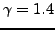
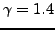
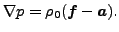
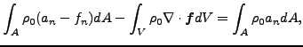

Linear acoustic calculations in gas are very similar to heat transfer
calculations. Indeed, the pressure variation in a space with uniform basis pressure  and
density
and
density  (and consequently uniform temperature
(and consequently uniform temperature  due to the gas law) satisfies
due to the gas law) satisfies
where
 is the second order unit tensor (or, for simplicity,
unit matrix) and
is the second order unit tensor (or, for simplicity,
unit matrix) and  is the speed of sound satisfying:
is the speed of sound satisfying:
| (304) |
 is the ratio of the heat capacity at constant pressure divided by the
heat capacity at constant volume (
 for normal air),
is the ratio of the heat capacity at constant pressure divided by the
heat capacity at constant volume (
 for normal air),  is the
specific gas constant (
is the
specific gas constant (
 for normal air) and
for normal air) and  is the
absolute basis temperature (in K). Furthermore, the balance of momentum reduces to:
is the
absolute basis temperature (in K). Furthermore, the balance of momentum reduces to:
|  | (305) |
For details, the reader is referred to [20] and [2]. Equation (303) is the well-known wave equation. By comparison with the heat equation, the correspondence in Table (9) arises.
Notice, however, that the time derivative in the heat equation is first order, in the gas momentum equation it is second order. This means that the transient heat transfer capability in CalculiX can NOT be used for the gas equation. However, the frequency option can be used and the resulting eigenmodes can be taken for a subsequent modal dynamic or steady state dynamics analysis. Recall that the governing equation for solids also has a second order time derivative ([18]).
For the driving terms one obtains:
|  | (306) |
which means that the equivalent of the normal heat flux at the boundary is the basis density multiplied with the acceleration. Consequently, at the boundary either the pressure must be known or the acceleration.